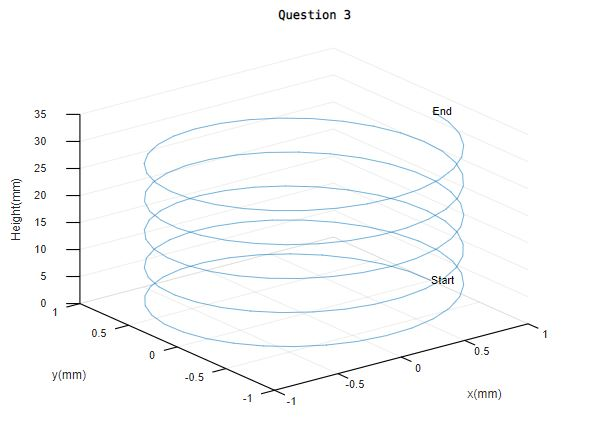

ME31002 Lab 1
Lab Report
Individual Report Due date: 8 Feb 2022, 23:59 Include: Code, figures, and anything you think it is important :)
Question 1
There are three sets of data. Plot the relatioship between the Angular Velocity and Capacity of Type A with Angular Velocity and Capacity of Type B.
Angular Velocity = [10, 22, 55, 77, 140, 380, 455];
Capacity of Type A = [2, 6.6, 17.6, 19.1, 31.5, 68.9, 122.4];
Capacity of Type B = [1.5, 3, 12.8, 27.8, 40, 52, 72.4];

Subject Group A:
60, 70, 80, 68, 50, 40, 41, 70, 66, 80, 98, 54, 65, 75, 62, 60, 45, 63, 84, 89
Subject Group B:
40, 31, 86, 60, 74, 95, 90, 77, 68, 42, 91, 92, 94, 68, 55, 73, 35, 72, 59
Subject Group C:
82, 95, 86, 47, 73, 83, 94, 91, 79, 50, 92, 87, 87, 45, 87, 88, 85, 67, 74, 71
Subject Group D:
% Randomly generate 30 scores

Question 4
Linearising a nonlinear function
To obtain a linear model of a nonlinear system, we assume the variables deviate slightly from an operating condition.
Taylor Series: a series expansion of a function about a point
Taylor Series: linear approximation
The linear approximation of the system (function) can be obtained using the tangent line.
f(x) ≈ f(x0) + f'(x0)(x - x0)